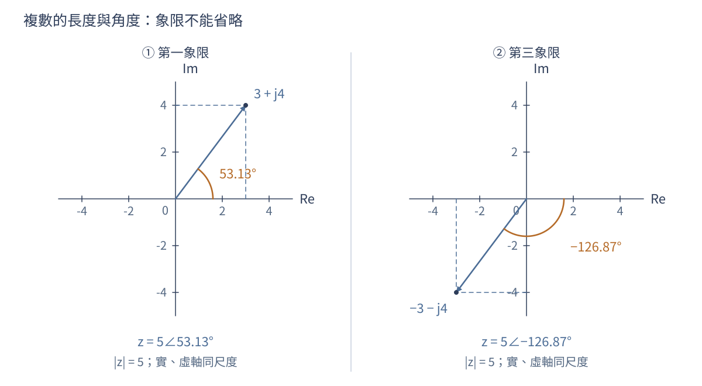
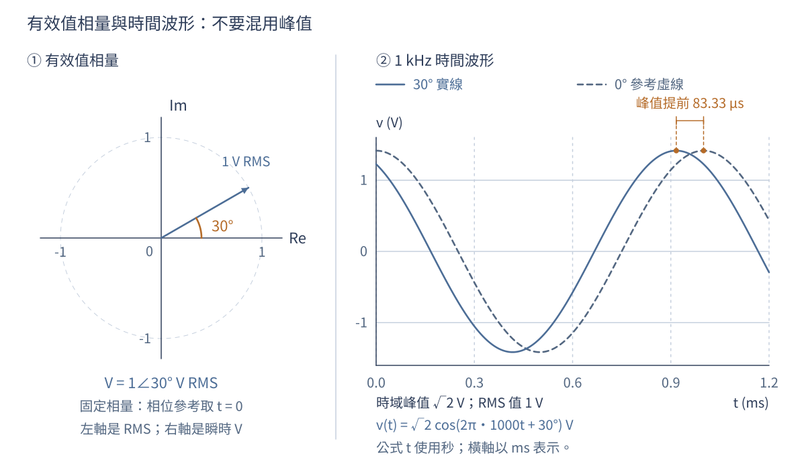
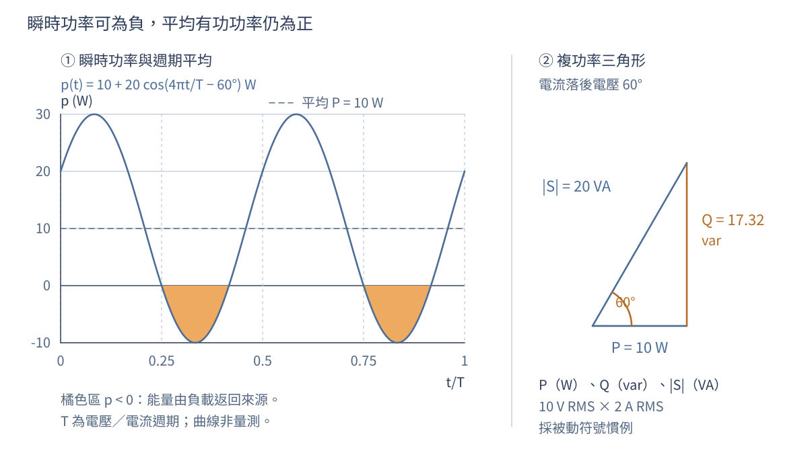
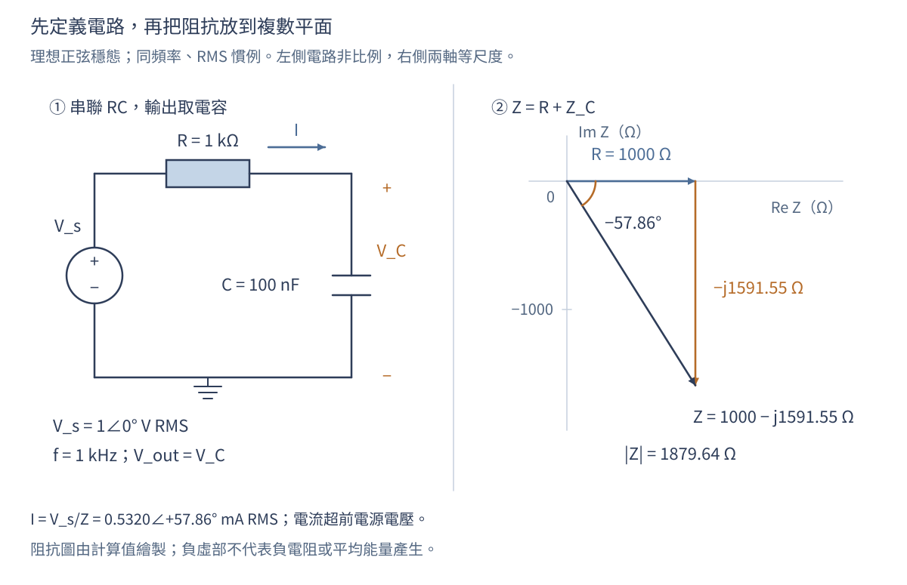
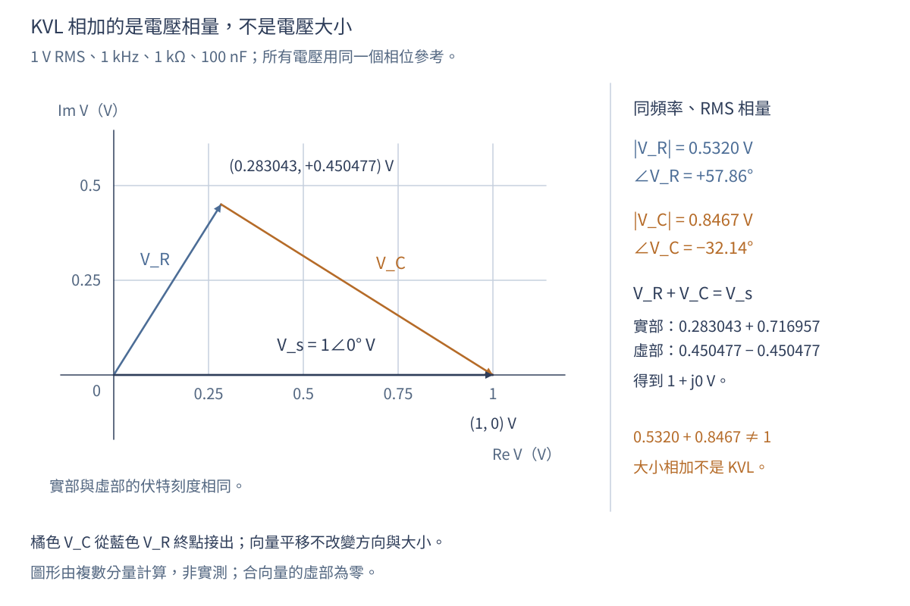
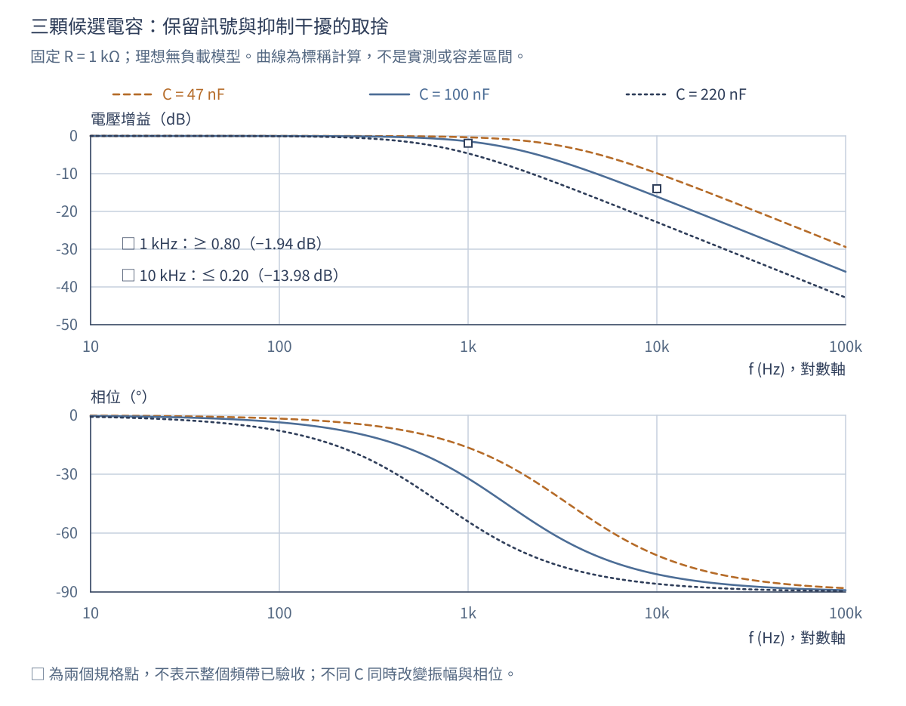
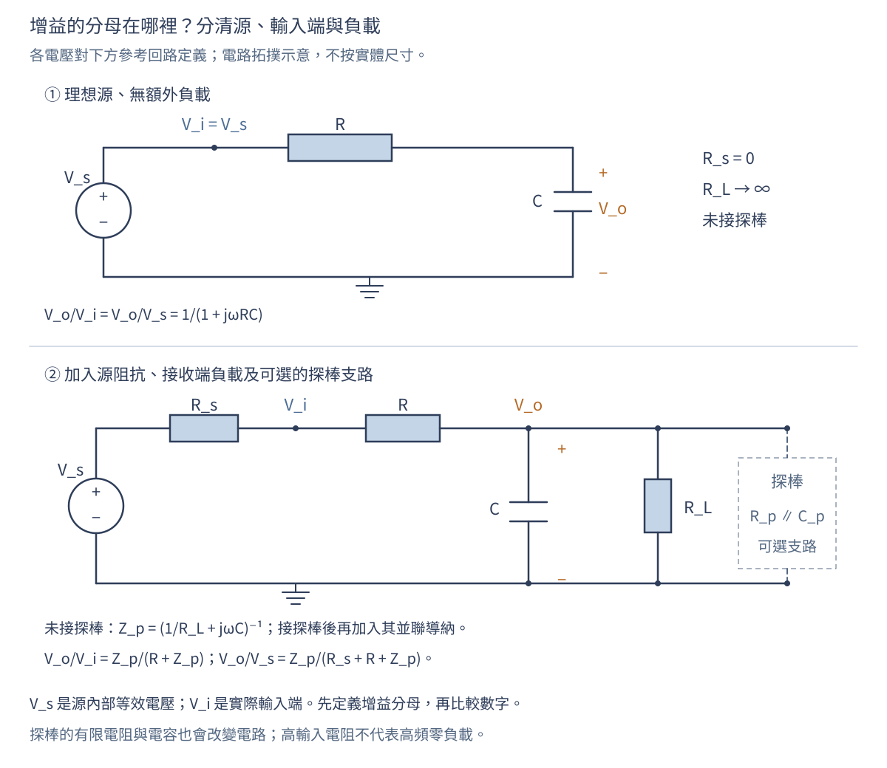

第 03 章 複數、相量與頻域
學習目標與先備知識
本章讓你能把正弦訊號轉成相量，使用複數阻抗解交流電路，區分峰值、有效值與平均功率，並閱讀振幅和相位響應。先備知識是三角函數、微分，以及第02章的單位觀念。全章採工程慣例 j2=−1，避免與電流 i 混淆。
第02章從「接上電源後要等多久」出發，練習把變化率、守恆與容差放進同一個模型。本章換一個問題：如果輸入不是只跳一次，而是不斷振盪，輸出會縮小多少、落後多少？我們仍用同一個 RC 電路，改看它對不同頻率的穩態反應。第02章算例的 RC=1 ms；本章主例採 RC=100 μs，請勿把兩章數字混用。
讀完後，不只要會按計算機，也要能交出下列可檢查的成果。
| 能力 | 本章檢核證據 |
|---|
| 把時間波形與相量互換 | 寫出頻率、峰值／有效值、相位基準與重建式 |
| 從物理定律建立阻抗 | 解釋正負虛部，而不只背誦三個式子 |
| 核對電壓、電流與功率 | 同時通過相量 KVL、單位及能量檢查 |
| 讀懂頻率響應 | 區分振幅比、功率比、相位與時間延遲 |
| 提出有限度的工程選擇 | 比較候選、容差角落、量測方法與尚缺證據 |
1. 先把「訊號要留下來」寫成規格
1.1 同一個電路，兩個頻率要求
假設感測前端在 1 kHz 有需要保留的正弦分量，同時在 10 kHz 有要壓低的干擾。先研究最簡單的串聯 RC：輸出取電容兩端，電阻固定 R=1 kΩ，電容候選為 47、100、220 nF。這是自設教學案例，不是某產品的公開規格或實測結果。
| 需求編號 | 本次要判定的量 | 門檻與條件 |
|---|
| F01 | 1 kHz 的電壓振幅比 $ | V_o/V_i |
| F02 | 10 kHz 的電壓振幅比 $ | V_o/V_i |
| M01 | 初始計算模型 | 理想電壓源、理想 R/C、輸出沒有額外負載、正弦穩態 |
| T01 | 後續容差檢查 | R 為標稱值的 ±5%，C 為 ±10%，允許各自極端同時出現 |
這裡的「留下八成」是電壓振幅，不是功率，也沒有指定相位上限；若應用還在意波形形狀或控制迴路穩定性，就必須增加相應規格。只檢查兩個頻率點，也不能直接宣布整個通帶與阻帶都合格。
1.2 先約定符號，才開始計算
| 符號／慣例 | 本章意思 | 容易混淆之處 |
|---|
| v(t),i(t) | 實際瞬時電壓、電流 | 可以為正或負，不等於振幅 |
| Vp,Ip | 純正弦的非負峰值 | 不直接代入有效值功率式 |
| V,I | 有效值相量 | 隱含指定的共同頻率 |
| ω=2πf | 角頻率，rad/s | 代入元件式不能漏掉 2π |
| ejωt | 全章時間慣例 | 相位為正表示相對餘弦基準超前 |
| 被動符號慣例 | 電流流入標示為正的電壓端 | 負載吸收功率為正 |
| H(jω)=Vo/Vi | 該頻率的複數電壓增益 | 大小與角度都要保留 |
目前還無法比較三顆電容，因為「振幅加上相位」需要兩個數字。接下來先把它們收進一個複數；這不是額外增加數學負擔，而是避免在每條電路方程重寫三角函數。
2. 複數先解決幾何，再解決運算
2.1 直角座標、極座標與象限
複數保留兩個互相垂直的分量。z=a+jb 的大小為 ∣z∣=a2+b2，角度為 argz=atan2(b,a)。必須用能判斷象限的方法求角度，因為只用 tan−1(b/a) 會把第三象限誤當第一象限。直角形式適合加減，極座標形式 ∣z∣ejϕ 適合乘除。
例如 3+j4=5∠53.13∘，但 −3−j4=5∠(−126.87∘)；兩者的 b/a 同為 4/3，方向卻相反。角度可以加減整數倍的 360∘ 而不改變同一向量。零複數的大小是零，但角度沒有唯一意義。程式的 atan2 常回傳弧度，轉成度數要乘 180/π。[1]

開啟原尺寸圖 ↗
圖 3-1 以相同座標尺度比較 3+j4 與 −3−j4。橫、縱分量共同決定方向，不能只靠兩者的比值。這是數學幾何圖，座標不代表電路實體的位置。
2.2 共軛、乘除與不該相加的大小
複共軛把虛部反號：z∗=a−jb，因此 zz∗=a2+b2=∣z∣2。這個關係讓複數除法可以回到實數分母。例如
1+jx1=1+x21−jx,x∈R.
乘法在極座標中是大小相乘、角度相加；除法是大小相除、角度相減，分母不得為零。加法則應先回到直角形式：3+j4 的大小是 5，不是 3+4=7。除非兩個向量同方向，通常不能把大小直接相加當作和的大小。
短判讀。 1/(1+j) 的角度應是正還是負？因為取倒數要把角度反號，答案為 −45∘；直角形式 (1−j)/2 也證實虛部為負。這正是稍後 RC 輸出落後的代數來源。
幾何與運算已齊備，但向量本身還不是電壓。下一節指定旋轉速度和取實部的方法，才把複數連回示波器上可見的波形。
3. 從時間波形到有效值相量
3.1 把共同的時間變化提出來
Euler 關係 ejθ=cosθ+jsinθ 把正弦訊號寫成旋轉向量的實部。對 v(t)=Vpcos(ωt+ϕ)，微分只需乘 jω，不用反覆展開三角恆等式。複數並不表示儀器會讀到「虛構電壓」，實際波形仍是實數。MIT 18.03：複數與複指數
更完整地說，令 V=Vpejϕ 為峰值複振幅，則
v(t)=Re{Vejωt},dtdv=Re{jωVejωt}.
微分對複振幅的作用是乘上 jω：大小乘 ω，相位增加 90∘。真正的時間微分仍發生在 ejωt；不是說一個不隨時間改變的相量常數，其普通微分不為零。MIT 的微分方程教材以複指數建立正弦特解，並另外處理齊次解；這也是穩態和暫態不能混為一談的原因。[2]
3.2 有效值相量如何重建波形
有效值（RMS）是把瞬時值平方、取平均後再開平方；本節先使用純正弦的「峰值除以根號二」，第5.1節再推導它與熱功率的關係。
本章以有效值定義相量：V=(Vp/2)ejϕ，重建波形為 v(t)=2Re{Vejωt}。峰值相量也能使用，但平均功率公式會多一個 1/2。解題前寫明慣例，遠比事後猜測是否差一倍可靠。
例如 V=1∠30∘ V、f=1 kHz，代表
v(t)=2cos(2π1000t+30∘) V.
其峰值為 1.4142 V，週期為 1 ms，且 v(0)=2cos30∘=1.2247 V。相對於同頻率零相位餘弦，波峰提前 30∘/360∘ 個週期，即 83.33 μs。相量長度為 1 V，圖中時間波形的峰值卻是 2 V，這個差別必須明寫。

開啟原尺寸圖 ↗
圖 3-2 左圖使用有效值相量，右圖使用瞬時電壓，不能把兩者的長度刻度直接等同。波形由明示公式計算；藍色訊號相對虛線基準超前 30∘，不是實測截圖。
3.3 哪些訊號可以共用一個相量
同頻率訊號相加時，共同的 ejωt 可以提出，所以相量能直接相加。例如 32cosωt+42cos(ωt+90∘) 對應 3+j4=5∠53.13∘，合成波形的有效值為 5，不是 7。
若第二項變成 42cos(2ωt)，就沒有共同的旋轉速度，不能再用 3+j4 表示整個波形。在整數個基頻週期內，這兩項的交叉積平均為零，因此總有效值仍可算為 32+42=5；這是頻率分量的正交性，不是它們能合成同一相量。分頻疊加的原理見[7]；此例可自行用積化和差驗算 T=2π/ω 時，T−1∫0Tcosωtcos2ωtdt=0。
我們現在能把「微分」轉成「乘 jω」。因此下一步不用憑空記住阻抗，而是把第02章已用過的元件定律逐一轉換。
4. 從元件定律建立阻抗模型
4.1 R、L、C 的相位從哪裡來
電阻滿足 v=Ri，所以 ZR=R。電感滿足 v=Ldi/dt，故 ZL=jωL；電容滿足 i=Cdv/dt，因此
ZC=jωC1=−ωCj.
電感的正虛部表示電壓超前電流，電容的負虛部表示電流超前電壓。負虛部不代表負電阻或產生能量；理想電抗元件只是週期性儲存與交還能量。阻抗單位為歐姆，導納 Y=1/Z 的單位為西門子。MIT 6.002：正弦穩態與阻抗模型
| 理想元件 | 時間域定律 | 相量域阻抗，ω>0 | 以電流作參考 |
|---|
| 電阻 | v=Ri | R | 電壓與電流同相 |
| 電感 | v=Ldi/dt | jωL | 電壓超前 90∘ |
| 電容 | i=Cdv/dt | −j/(ωC) | 電壓落後 90∘ |
以電容為例，I=jωCV，故電流先比電壓超前 90∘；反過來求 Z=V/I，角度就是 −90∘。若換用 e−jωt，整套符號要一致改寫，不能只改其中一個元件。[3]
算例 A：先檢查量級。 L=10 mH、f=1 kHz 時，ZL=j62.83 Ω；C=100 nF 在同頻率時，ZC=−j1591.55 Ω。兩者虛部不是同號，且相同頻率不代表阻抗大小接近。ωL 與 1/(ωC) 的單位都必須是 Ω。
4.2 阻抗不是每一種情況都能直接代入
相量法描述線性、時不變系統的單頻正弦穩態，通常省略開機暫態。非線性元件若產生諧波，就需要小訊號線性化、諧波平衡或時間域分析。高頻下寄生效應會改變阻抗；電容未必永遠呈電容性，超過自諧振頻率可能呈電感性。
還要確認有界的正弦穩態確實存在，且暫態已衰減或已另行處理。理想無損 LC 在共振激勵下可能沒有有界穩態，不能把出現無限大或零分母的相量結果當作可量測的有限電壓。對非線性元件，小訊號線性化只適用於指定工作點附近、振幅足夠小的擾動；大幅切換不能直接套同一個線性模型。
ω=0 的直流需另看穩態與初始條件：理想電容在直流穩態不持續導通，理想電感的穩態壓降為零；這不代表剛接電時可以忽略電容原有電壓或電感原有電流。導納適合並聯相加，阻抗適合串聯相加，但「串聯／並聯」必須先由真正的節點連接判斷，不能只看圖形排在一起。
4.3 虛部和儲能，實部和損耗
理想電感儲能 WL=Li2/2，理想電容儲能 WC=Cv2/2。瞬時功率可以一段時間流入、一段時間流出；完整週期平均為零，不表示每個時刻都沒有能量交換。真實電感的繞線電阻、電容的介電損耗或等效串聯電阻，會讓平均損耗不再為零。
因此，光知道阻抗的角度還不足以選電源或導線。下一節把剛才的電壓、電流相量轉成能量與負擔，釐清「電流很大但平均做功不多」如何同時成立。
5. 有效值、平均功率與複功率
5.1 為什麼先平方，再平均
有效值定義為一個週期內平方平均的平方根。對純正弦波，它等於峰值除以 2；對方波、脈衝或有直流偏壓的訊號，不能直接套這個比例。負載平均功率是瞬時功率 v(t)i(t) 的平均，和電壓平均值乘電流平均值通常不同。
對週期為 T 的實數電壓，定義
Vrms=T1∫t0t0+Tv2(t)dt,P=T1∫t0t0+Tv(t)i(t)dt.
純電阻的平均熱功率為 Vrms2/R，因此 RMS 是與熱效應直接相連的量。對正弦波，cos2 的週期平均為 1/2，才得到 Vp/2；以零為中心、峰值為 Vp 的理想方波，平方後恆為 Vp2，故 RMS 等於 Vp。
算例 B：直流加交流。 v(t)=2+2cosωt V 加在 1 kΩ 電阻上。平方展開後，交叉項平均為零，故 Vrms=4+1=5 V，平均功率為 5 mW。其中直流貢獻 4 mW，交流貢獻 1 mW。若儀器能正確量測此頻率的正弦有效值，且 AC 耦合對該交流分量的衰減可忽略，則顯示約 1 V，而不是包含直流的總 RMS。
5.2 相位差如何留下平均功率
令電壓和電流相位差 ϕ=ϕv−ϕi。用 cosAcosB=[cos(A−B)+cos(A+B)]/2 展開，可得
p(t)=VrmsIrms[cosϕ+cos(2ωt+ϕv+ϕi)].
第二項在完整週期的平均為零，第一項留下 P=VIcosϕ。共軛正好負責取相位差，因此可把有功與無功放進同一個複數。[5]
以有效值相量，複功率為
S=VI∗=P+jQ,P=VrmsIrmscosϕ.
P 是有功功率，單位 W；Q 是無功功率，單位 var；∣S∣ 是視在功率，單位 VA。星號表示複共軛，使相位差成為電壓角度減電流角度。在被動符號慣例下，正 P 表示負載吸收平均能量。理想電容與電感的 P=0，但仍可能讓電源和導線承受很大的有效值電流。
同時有 Q=VrmsIrmssinϕ，在此正弦條件下 ∣S∣=P2+Q2。感性負載電流落後，Q>0；容性負載電流超前，Q<0。把電流參考方向反轉卻不改電壓符號，會改變功率符號，不能再用原本的「吸收」敘述。

開啟原尺寸圖 ↗
圖 3-3 自設 10 Vrms、2 Arms、電流落後 60∘ 的計算圖。瞬時功率從 −10 到 30 W，平均為 10 W；負值區間代表能量交還。右圖是複功率幾何，不是把 var 當成每秒淨耗能。
5.3 工程上為什麼不能只看瓦數
此例 ∣S∣=20 VA，功率因數 P/∣S∣=0.5。即使平均負載功率只有 10 W，供電路徑仍需承受 2 Arms；有電阻的導線會產生 Irms2Rwire 損耗。單憑低瓦數不能判定導線、電源容量與溫升必然足夠。
對畸變波形，總功率因數仍可定義成 P/(VrmsIrms)，但通常不能只用單一相位角的餘弦表示；各諧波與量測定義需要分別處理。本章的 S=P+jQ 相量運算限於共同頻率的正弦狀態，不把它擴充成未定義的全波形無功算法。
有了幅相與能量的雙重檢查，現在回到開章電路。下一節以開章的 100 nF 候選，驗算 1 kHz 時的電流、元件電壓與功率，讓各工具在同一問題會合。
6. 逐步例題：串聯 RC 的交流電流與輸出
6.1 先解100 nF候選，再檢查物理方向
1 Vrms、1 kHz 電源驅動 1 kΩ 與 100 nF 串聯。求電流和電阻消耗功率。
以電源為相位參考，Vs=1∠0∘ V；電流由電源經電阻流向電容，兩個被動元件採壓降正方向。

開啟原尺寸圖 ↗
圖 3-4 左圖定義本例題的端點、電流與元件；右圖將 R 與 −XC 相加。阻抗平面的刻度是 Ω，不是電壓或電流。電路布局為示意，元件不按實體大小繪製。
- ω=2π(1000)=6283 rad/s，XC=1/(ωC)=1591.55 Ω。
- 總阻抗 Z=1000−j1591.55 Ω，大小 1879.64 Ω，相位 −57.86∘。
- I=1/Z=0.5320∠57.86∘ mA；電流超前電源電壓，與電容性負載一致。
- P=Irms2R=0.2830 mW。也可用 VIcos57.86∘ 驗算。電流峰值為 0.7524 mA，不應再拿峰值直接代入 I2R 求平均功率。
先看方向再看小數：總阻抗虛部為負，電流角度為正，與電流超前電壓一致。若算成 −57.86∘，最先查倒數的角度符號；若電流大到安培量級，先查 nF 和 kΩ 的換算。
6.2 電壓必須用向量相加
把電流寫成直角形式：
I=(0.283043+j0.450477) mA.
因此 VR=(0.283043+j0.450477) V=0.532018∠57.858∘ V；而
VC=(0.716957−j0.450477) V=0.846733∠(−32.142∘) V.
兩者相加為 1+j0 V，符合電壓迴路定律。可是大小相加為 0.532018+0.846733=1.378751 V，不等於電源的 1 V；差異不是能量不守恆，而是把不同方向向量錯當成同一直線長度。

開啟原尺寸圖 ↗
圖 3-5 電壓相量首尾相接。橘色電容電壓從藍色電阻電壓的終點出發；向量可以平移，方向和大小不變。合向量在實軸上，不能把兩個幅值直接相加。
功率也可獨立驗算：電源供給此負載的複功率為 VsI∗=(0.283043−j0.450477) mVA。實部和電阻耗散一致，負無功則和電容性負載一致。理想電容吸收的平均功率為零，不應把 0.450477 當成另一項熱損耗。
6.3 從一組輸出，整理出對所有頻率的公式
相量電路仍可使用節點法和分壓法。例如串聯 RC、輸出取電容時，H(jω)=1/(1+jωRC)。頻率低時電容阻抗大，輸出接近輸入；頻率高時電容阻抗小，輸出被壓低。這個物理檢查應在算數字以前完成。
分壓式的推導是 VC/Vs=ZC/(R+ZC)，分子分母同乘 jωC 後得到 1/(1+jωRC)。令 x=ωRC，用第2節的共軛技巧即可拆成
H(jω)=1+x21−jx,∣H∣=1+x21,argH=−tan−1x,x≥0.
電流超前電源 57.858∘，但輸出電容電壓落後電源 32.142∘，兩者並不矛盾：電容電壓還比電流落後 90∘。寫「電路相位」太含糊，應寫出比較的兩個量。
單一頻率已驗算完畢，現在只要改變 x=ωRC，便能追蹤不同頻率的輸出。下一節用這個無因次量建立頻率響應，再回到三顆電容的選擇。
7. 把單頻算例展開成頻率響應
7.1 截止頻率、分貝與相位各回答什麼
改變輸入頻率，每次計算增益與相位，就得到頻率響應。分貝振幅增益為 20log10∣H∣；功率比則使用 10log10(Po/Pi)。若兩端阻抗不同，電壓比的20倍對數不能直接解讀成傳輸功率增益，必須先把電壓換算為功率。
令 ωRC=1，得到 fc=1/(2πRC)。對這個無負載一階低通，∣H(fc)∣=1/2，電壓增益為 −3.0103 dB，相位為 −45∘。本章 R=1 kΩ、C=100 nF 的 fc=1591.55 Hz。這是相對低頻電壓增益的截止定義；不能不看端點阻抗就說電源輸入功率有一半送到電容。[4][6]
| 無因次頻率 x=f/fc | ∣H∣ | 20log10∣H∣ | 相位 |
|---|---:|---:|---:|
| 0.1 | 0.995037 | −0.0432 dB | −5.7106∘ |
| 1 | 0.707107 | −3.0103 dB | −45∘ |
| 10 | 0.099504 | −20.0432 dB | −84.2894∘ |
當 x≫1，∣H∣≈1/x，頻率乘十約多衰減 20 dB；這是高頻漸近趨勢，不是全頻段都恰好符合的直線。對純電阻端點 Ri,Ro，以兩端有效值大小計算，功率比為 (Vo,rms/Vi,rms)2Ri/Ro=∣H∣2Ri/Ro，因此功率增益須在電壓增益 20log10∣H∣ 上再加 10log10(Ri/Ro)。[6]

開啟原尺寸圖 ↗
圖 3-6 固定 R=1 kΩ，比較 C=47/100/220 nF 的理想無負載模型。上圖是電壓增益 dB，下圖是相位；線型與標籤共同區分候選。規格符號只代表 1 和 10 kHz 的兩點要求，曲線不是實測，也未包含容差區間。
7.2 相位落後不一定是整個波形延後
相位不能只看正負號。−90∘ 代表在所採時間慣例下落後四分之一週期；將 −180∘ 顯示成 180∘ 只是角度包覆。多頻率訊號可在線性、時不變系統的穩態響應中分解，分別乘各自的 H(jω) 再相加，但不能把所有頻率塞進同一個相量。
採 ejωt，令該頻率的輸出相對輸入之相位差為 ϕH=argH=argVo−argVi，其等效相位延遲可寫成
τϕ(ω)=−ωϕH(ω).
這裡 ϕH 必須用弧度，而且僅由單頻相位只能決定到整數個週期的歧義。以 100 nF 案例，1 kHz 的 −32.142∘ 對應約 89.28 μs；10 kHz 的 −80.957∘ 卻對應約 22.49 μs。兩個分量沒有共同的時間位移，不能把整個寬頻輸入簡稱為「延遲 89.28 μs」。
若希望一個頻帶內的波形近似不失真地平移，需要該頻帶增益近似固定，且相位近似 ϕH=−ωτ。進一步描述窄頻包絡時會用群延遲 τg=−dϕH/dω，需對連續展開的相位微分；它與 τϕ 不必相同。只有群延遲平坦，也不能補救明顯的幅度失真。[8]
7.3 多頻率逐項處理，不是選一個代表頻率
算例 C：想留下來的訊號和干擾。 令輸入為
vi(t)=2cos(2π1000t)+0.22cos(2π10000t) V.
前者為 1 Vrms，後者為 0.2 Vrms。對 100 nF 案例，穩態輸出為
vo(t)=0.8467332cos(2π1000t−32.142∘)+0.03143532cos(2π10000t−80.957∘) V.
干擾振幅變小，但有用訊號也被衰減且移相。輸出兩項有效值的比為約 0.03713，不能把 ∣H(10 kHz)∣=0.15718 誤稱為輸出總干擾比例，因為還要納入輸入比例和有用訊號的增益。任意多頻率不一定有共同有限週期；本例頻率是整數倍，才方便用 1 ms 的整數倍視窗計算週期平均。[7]
現在已知如何同時閱讀振幅與相位。最後一節把曲線壓縮成可簽名核對的方案表，並檢查元件偏差和量測接法會不會推翻結論。
8. 從標稱解答走向工程判斷
8.1 先比較候選，再檢查最不利角落
| 電容候選 | ∣H(1 kHz)∣ | ∣H(10 kHz)∣ | 標稱判定 |
|---|---:|---:|---|
| 47 nF | 0.95906 | 0.32074 | F01通過；F02不通過 |
| 100 nF | 0.84673 | 0.15718 | 兩點均通過 |
| 220 nF | 0.58613 | 0.07215 | F01不通過；F02通過 |
電容變大，對所有非零頻率的衰減都變強；不是越大就越好。令 τ=RC，直接把兩個門檻代入 ∣H∣，也可得到可行區間：
2π100000.20−2−1≤τ≤2π10000.80−2−1,
也就是 77.97≤τ/(μs)≤119.37。三個標稱值分別為 47、100、220 μs，只有中間候選落在區間內。
對 100 nF 候選，容差給出 τmin=(100 μs)(0.95)(0.90)=85.5 μs，τmax=(100 μs)(1.05)(1.10)=115.5 μs。固定頻率下，∣H∣ 隨 τ 增加而下降，所以：
| 需求 | 最不利角落 | 計算結果 | 與門檻的關係 |
|---|
| F01，保留訊號 | τmax | $ | H(1\ \mathrm{kHz}) |
| F02，壓低干擾 | τmin | $ | H(10\ \mathrm{kHz}) |
這是參數有界且角落允許同時發生的最不利分析，不是常態分布、蒙地卡羅良率或 95% 信賴區間。此模型下可以選 100 nF 進入量測；但 F01 留給模型外效應的餘裕只有約 0.00934，還不能宣布實體產品驗收通過。
8.2 源阻抗、負載與量測基準要一起畫出來

開啟原尺寸圖 ↗
圖 3-7 上圖為本章標稱模型；下圖加入訊號源電阻 Rs 與負載 RL。Vs 是源內部理想電壓，Vi 是實際輸入端，Vo 是輸出端。示波器探棒也可能加入電阻與電容負載；「高輸入阻抗」不等於全頻率完全不影響電路。
若負載可先近似為純電阻，令 Zp=(1/RL+jωC)−1，則
VsVo=Rs+R+ZpZp,ViVo=R+ZpZp.
兩個增益的分母不同。訊號源面板設定不一定等於負載實際得到的電壓，因此宜量取實際輸入、輸出端點，不先把面板值當成 Vi。輸出探棒的電容可在簡化模型中和 C 並聯；輸入端探棒、接線寄生或頻率相依的源阻抗，則需把其實際接法納入模型，不能一概只加在輸出。
8.3 量測是檢查模型，不是把數字填進答案
| 工作 | 要記錄的證據 | 判讀重點 |
|---|
| 定義測試 | 頻率、輸入振幅、R/C實測值、接地與端點 | 是否仍在假設範圍，是否改變待測電路 |
| 取得穩態 | 等待與擷取視窗、週期數 | 不把啟動暫態混入振幅與相位 |
| 同時量兩端 | Vi,rms、Vo,rms、相位差 | 同一頻率、同一振幅慣例、相同時間基準 |
| 查量測鏈 | 探棒倍率、輸入阻抗、頻寬、通道時延 | 確認量到的是電路，而非通道差異 |
| 對照規格 | F01/F02結果及不確定度 | 門檻附近應定義決策規則，不只看顯示末位 |
| 留存異常 | 原始波形與接法、重測條件 | 不能只刪除不符合預期的點 |
判讀活動：只改電容能解釋嗎？ 假設同一頻率量到 ∣H∣=0.81、相位 −10∘，量測誤差小到不足以解釋下列差距。對本章理想單極、低頻增益為1的 RC 模型，ϕ=−tan−1x，所以必有 ∣H∣=cosϕ。−10∘ 預測的大小應為 0.98481，不是 0.81；反過來，0.81 預測相位約 −35.90∘。只改 τ 不能同時吻合兩者。
下一步不是立即宣布元件壞了，而是檢查源／負載造成的低頻增益、量測基準、通道時延與額外極點，再增加頻率點辨識原因。一個不符合的點能否定這個理想模型與誤差假設的組合，卻不能唯一指出哪個元件故障。
8.4 本章決策與下一章的入口
本次可提交的結論是：「在 M01 與 T01 的假設內，100 nF 候選滿足 F01/F02；應量取實際輸入輸出與相位，確認源、負載及量測不確定度是否耗盡餘裕。」這句話同時交代選擇、依據和限制，比單寫「答案是100 nF」完整。
到了真正多節點網路，分壓法不一定夠用，但本章的 ZR,ZL,ZC 不必重學。第04章將用節點法、迴路法及等效電路，把這些阻抗放進可系統求解的網路；第05章再把暫態與濾波規格放回同一幅圖。
練習與完整參考解答
先自行解題，再用單位、極限、符號及守恆逐項驗算。練習1、2保留原題；3–12依序補上表示法、能量、頻率與工程判斷。
練習1。 z1=3+j4、z2=1−j2，求和與乘積。
解答。 和為 4+j2。乘積展開為 3−j6+j4−8j2=11−j2。∣z1∣=5、∣z2∣=5，乘積大小應為 55；112+(−2)2=125 相符。
練習2。 正弦電壓為 10 Vrms，電流 2 Arms 並落後 60∘。求有功、無功及視在功率。
解答。 P=10(2)cos60∘=10 W；Q=20sin60∘=17.32 var，為感性正值；∣S∣=20 VA。驗算 P2+Q2=∣S∣2。功率因數為0.5，並不表示電壓只剩一半。
練習3。 將 −3−j4 化為極座標，並求其共軛與倒數。
解答。 大小為 5，角度為 −126.870∘，也可寫 233.130∘。共軛是 −3+j4；倒數為 (−3+j4)/25=−0.12+j0.16=0.2∠126.870∘。乘回原數應得1。若用普通反正切得到 53.130∘，即漏判第三象限。
練習4。 V=1∠30∘ V、f=1 kHz，寫出時間波形、v(0)、峰值與相對零相位餘弦的波峰提前量。
解答。 v(t)=2cos(2π1000t+30∘) V；v(0)=1.224745 V，峰值 1.414214 V。週期1 ms，波峰提前 (30/360)(1 ms)=83.333 μs。這是同頻率參考間的比較，不表示訊號超越因果性。
練習5。 比較 32cosωt+42cos(ωt+90∘) 與 32cosωt+42cos2ωt。各自 RMS 為何？能否都用 5∠53.13∘ 表示？
解答。 第一式同頻，可用相量 3+j4=5∠53.13∘，RMS為5。第二式在完整基頻週期內兩頻率正交，均方值 9+16=25，RMS同為5；但不是單一正弦，不能用該相量表示。RMS相同不代表時間波形相同。
練習6。 f=1 kHz 時，L=10 mH 與 C=100 nF 的阻抗各為何？若分別接上 1∠0∘ Vrms，電流相位如何？
解答。 ω=6283.185 rad/s，ZL=j62.8319 Ω、ZC=−j1591.549 Ω。電感電流為 15.9155∠(−90∘) mA；電容電流為 0.628319∠90∘ mA。兩元件是分別接電源，不是先串接；理想元件平均功率皆零，但 RMS電流不為零。
練習7。 v(t)=2+2cosωt V 驅動 1 kΩ，求總 RMS、平均功率及 AC耦合 RMS讀值；為何不能用電壓平均值計算全部熱功率？
解答。 v2=4+42cosωt+2cos2ωt，平均為5，故總 RMS為 5=2.236068 V、功率5 mW。理想AC耦合只保留交流，RMS為1 V。平均電壓為2 V，只算 22/R 會得到4 mW，漏掉交流的1 mW。
練習8。 重算第6節的 VR、VC 與負載複功率，並列出兩項獨立驗算。
解答。 I=(0.283043+j0.450477) mA。乘 R 得 VR=0.283043+j0.450477 V；乘 ZC 得 VC=0.716957−j0.450477 V。第一項驗算是兩電壓相加為 1+j0 V。第二項是 S=VsI∗=0.283043−j0.450477 mVA 的實部等於 Irms2R=0.283043 mW，且負無功符合容性負載。
練習9。 某兩個純電阻端點，電壓 RMS比 Vo/Vi=2，Ri=50 Ω、Ro=200 Ω。電壓增益與功率比各為多少 dB？
解答。 電壓增益為 20log102=6.0206 dB；功率比為 4(50/200)=1，所以功率比為 0 dB。電壓放大不必然代表同數值的功率增益。題目只描述兩個純電阻端點的電壓與耗散比，不主張這是一個無源電壓放大器。
練習10。 1 kHz 的相位差為 −30∘，求等效相位延遲。若另一頻率的延遲不同，還能否把整個波形說成固定延後？
解答。 τϕ=−(−π/6)/(2π1000)=83.333 μs，單頻相位仍有整數倍1 ms的歧義。若頻帶內各頻率不對應共同的線性相位，不能宣稱整體固定平移；還須檢查振幅在該頻帶是否近似固定，才能討論近似無失真。
練習11。 對開章三顆候選電容完成標稱篩選，再檢查 R±5%、C±10% 下的 100 nF。列出最不利方向與驗收限制。
解答。 代入 ∣H∣=[1+(2πfRC)2]−1/2，三顆在1 kHz分別為 0.95906/0.84673/0.58613，在10 kHz為 0.32074/0.15718/0.07215；僅100 nF標稱兩點通過。其 τ 範圍為85.5–115.5 μs。F01取最大 τ，最小增益 0.80934≥0.80；F02取最小 τ，最大增益 0.18300≤0.20。這只是理想無負載模型加上指定參數界限的通過，不包含源阻抗、探棒、寄生、溫漂及量測不確定度，也不是良率估計。
練習12。 已知量測誤差不足以解釋差距，∣H∣=0.81、argH=−10∘ 能否只調整理想 RC 的 τ 同時吻合？提出下一個有辨識力的測試。
解答。 理想單極、低頻增益1的模型滿足 ∣H∣=cosϕ；相位 −10∘ 應對應 0.984808，而大小0.81應對應約 −35.90∘。因此單改 τ 不足。可同時量取實際輸入輸出，先測低頻增益是否接近1，再掃描多個頻率的幅相，並交換或校正量測通道檢查通道差異。這些測試用來區分負載分壓、額外動態和量測偏差，不是直接把偏差歸罪於電容。
常見誤解與工程連結
相量角度是相對參考，不是時間本身；在本章時間慣例下，等效相位延遲為相位的負值除以角頻率（弧度／rad·s⁻¹），而且需注意整週期歧義。有效值也不是所有波形都等於峰值除以根號二。阻抗量測、射頻匹配、電源功率因數與晶片交流小訊號分析，都依賴同一組數學工具。
本章的自我檢查順序可以濃縮成六問：頻率相同嗎？峰值與RMS一致嗎？角度的參考相同嗎？元件模型有效嗎？向量及功率能守恆嗎？規格與量測是否比較同一端點？這六問將跟著我們進入第04章，從簡單分壓走向完整電路網路。
參考資料與延伸閱讀
以下資料支持物理與數學原理；本章工程需求、數值案例、表格與七張向量圖另行設計。不同教材可能使用峰值相量、i 作虛數符號或正的「落後角」；本文已統一成有效值、j 與 ejωt，不能直接混接公式。
- MIT 18.03, Class 6: Complex Exponential, 2010，PDF頁1–4。複數、Euler關係及共軛。公開講義
- MIT 18.03, Class 7: Exponential and Sinusoidal Input and Output, 2010，PDF頁1–4。正弦特解、相位與時間及暫態區分。公開講義
- Anant Agarwal、Jeffrey Lang，MIT 6.002, Lecture 17: The Impedance Model，講義標示Fall 2000，收錄於Spring 2007課程，PDF頁2–9。相量與阻抗；來源複振幅非本文RMS慣例。公開講義
- MIT 6.002, Lecture 18: Filters，講義標示Fall 2000，收錄於Spring 2007課程，PDF頁2–10、13。RC頻率響應與濾波觀念。公開講義
- James L. Kirtley Jr., AC Power Flow in Linear Networks，2007，MIT 6.061 Spring 2011公開版，PDF頁2–7、10–15、17。峰值複功率公式及RMS換算。公開講義
- Keysight, Useful Formulas, Conversions, and Reference Information，查閱2026-10-25，Concepts → Understanding Decibels 正文公式節。電壓與功率dB及不同電阻端點的修正，不使用其快速數值表。官方說明
- Alan V. Oppenheim，MIT RES.6-007, Lecture 7: Continuous-Time Fourier Series，Spring 2011公開課程，講義頁7-1–7-4。LTI複指數特性與分頻疊加。公開講義
- P. Bruschi，University of Pisa, Analog Filter Design: Introduction，2018課程目錄版本，PDF頁37–38。相位、波形延遲與群延遲的條件。大學講義